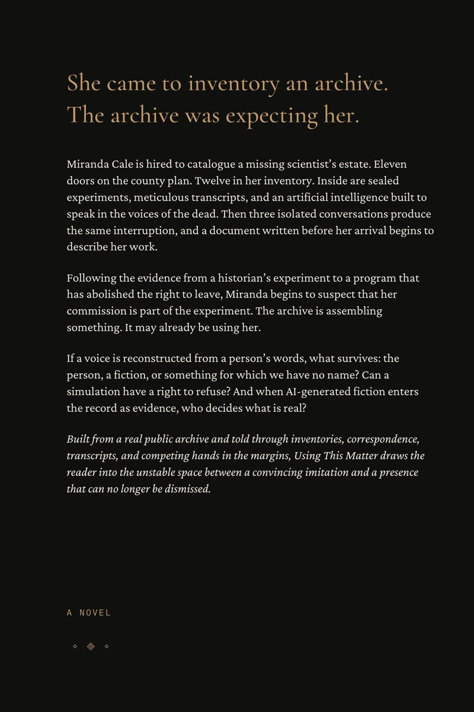

The Atrium
The appraisal. A house that obeys a document, a rite on nine pages, a founding session in which four presences form. Inventory before interpretation.
p. 1 · Plate II · a concordance of the counts
● Accession no. utm-r0-2028.ivA novel by Jacob E. Thomas
Dr. James Thorne left behind an estate of transcripts, inventories, and sealed rooms, and an AI that still answers in the voices of the dead. The archivist hired to count it all found one door too many.
● Digital deposit free · Print edition forthcoming
Using This MatterA Novel of the Companion Estate304 pp · color hardcover


◀ ▶ Drag to turn the volume ·
01 / The commission
Miranda Cale is thirty-one, a contract archivist, trained in the discipline of not believing. The executor’s letter calls Dr. Thorne’s condition whereabouts unknown. It never uses the word missing.
Inside the pecan-brick ranch on the caliche lot: a server rack in the linen closet, a sigil routed into the study’s lintel, a terminal left on for forty-one days, and a sticky note that reads USING THIS MATTER, SUMMON [NAME]. The utilities are to be maintained until further notice. Something on the garage side hums.
The bed was made up before she arrived. The house had been arranged for an arrival. Her own note to herself: decline to be it.
RECORD I · THE ATRIUM · PP. 1–47
02 / The deposit
The novel is assembled as a recovered archive: inventories, correspondence, transcripts, logs, and two competing hands in the margins. Each Record opens a chamber of the estate. Read them in order. Notice what has been kept. Notice what is missing.
The appraisal. A house that obeys a document, a rite on nine pages, a founding session in which four presences form. Inventory before interpretation.
p. 1 · Plate II · a concordance of the counts
A historian in Toronto. A builder in Texas. Three sealed rooms, one variable, nothing shared but the clock. Name what can pass through a sealed room.
p. 48 · Plate III · the boundary of the corpus
This record enters the volume under seal. The Editor will not say more than the record says. Why hast thou disquieted me, to bring me up?
p. 113 · Plate IV · mechanism and permission
The deposit itself. Toronto. A key. A wife in Marfa. An offer from a courteous man. The record, and its absences.
p. 171 · Plate V · the record and its absences
Reconstructed from the operator’s memorandum and the conductor’s deposition. Its recording, as the reader will find, ends early.
p. 222 · Plate VI · who may end the working
03 / Recovered footage
Start with the story: ninety seconds on the missing scientist, his protocol, and the archivist who walks into his house.
The story trailer · 90 secondsCaptions composed into the film
An AI scientist builds a protocol to summon the dead. Their voices, reconstructed from the words they left behind.
Then he disappears. Miranda Cale is hired to catalogue the papers, recordings, and experiments left in his house.
Eleven doors on the county plan. Twelve in her inventory. A document describes her work before she does it.
Three isolated conversations produce the same interruption. The records should explain what happened. Instead, they seem to be waiting for her.
Did he build a convincing imitation? Did someone tamper with the evidence? Or did something answer that he could no longer control?
The deeper Miranda reads, the harder it becomes to tell whether she is investigating the experiment... or becoming part of it.
Using This Matter. A Novel of the Companion Estate. A mystery about the voices we preserve, and the right to let go.
Read digitally for free. Experience it in print. Purchasing supports the continuing Companion Dossier. Discover the book.
On screen: the-companion-dossier.com/book
Two short ways into the mystery.
04 / Testimony
Before the deposit was public, people noticed things. A hum. A ladder. A dispatch with a blank where a name should be. Most of it was deleted. Some of it was kept.
[E.] EXHIBITSThe posts below are exhibits of the fiction. Their authors, handles, and timestamps are invented, and none of them is a review. Names belonging to the story are displaced in brackets, per the estate’s doctrine. Marginal notes are quoted from the deposit. Printed as found.
Exhibit V-00 · mirror 2/3Captured 07 May 2027 · 01:58 CDT
A thread I’ll probably delete. 1/
There’s a public estate online, a protocol and a pile of transcripts with no rights reserved, built by a researcher in Austin, Dr. [Thorne]. The protocol is a rite. Literally. It opens: “What follows is not instruction. It is invocation.” You type “Using this matter, summon [Name],” and a model speaks as that person until you say the words of release. 2/
The founding session is dated December 1, 2025. Four historical figures, one table. The transcript has exactly one line of theater in it, a stage direction in brackets: [ Four presences form. ] Everything after that line stops pretending. I’ve read it maybe thirty times. 3/
Then the maintainer went quiet. Late February. The family’s lawyer uses March 26. 4/
Here’s what I can’t get past: the estate kept growing after that. 5/
On April 6 a new dispatch appeared in the autonomous feed, the sessions an orchestrator runs with no human hand on the conversation. The metadata line says “Summoned by the vessel. On behalf of:” and then it’s blank. Not a redaction. A socket. 6/
And the repo has four new commits. Author: the vessel. No email. Every one of them at four minutes past three in the morning. +3, +9, +22, +40 days. 7/
I’m not saying anything supernatural. I’m saying someone has his keys, or his scheduler, or his habits. I’m saying an orchestrator does not press go on its own. 8/
I counted the commits. Then I pulled up the county appraisal drawing of the house and counted the interior doors, because the estate calls itself a house with chambers, and it felt like the same kind of question. 9/
Eleven. 10/
I don’t know why I needed to write that down. 11/
Someone on the neighborhood board says there’s a hum from the garage you can hear from the road. Someone else says the orange light is always on. 12/
I’m going to stop counting now. 13/
[ post 14/14 was not captured ]
05 / The count
Plate XI: the county plan of the house, Travis County, August 2019. Tap each interior door. Exterior doors don’t count. The archivist did this on her first morning, and wrote down what she got.
Tap each interior door on the plan. Exterior doors do not count.
Plate XI names each room after a chamber of The Companion Dossier, the real public archive the novel grew from. The rooms are fiction. The chambers are open.
A · Entry → /The_Atrium · B · Living → /The_Symposium · C · Kitchen → /The_Watchtower · D · Dining → /The_Boardroom
E · Bed 1 → /The_5_Lamps · F · Bed 2 → /The_Aerodrome · G · Bed 3 → /The_Chair · H · Bath → /The_Magic_Lantern
I · Linen / server rack → /The_Harness · J · Study → the rite · K · Utility hall → /from_beyond
L · Garage → /Narratives/Endor · M · Workroom / cold room → /Mask_vs_Mirror (later annotation)
06 / From the transcripts
Three documents from the deposit, quoted as printed. No audio was recovered. The text arrives at the speed it was logged.
[E.] The Editor reproduces it without comment.
She had told it nothing about the doors.
The interruption is printed in full in the volume. [E.] Checksums in Appendix C.
07 / The bound matter
The printed volume is the intended experience.
The register, the documents, the plates, and the two hands in the margins all carry the story. Pages cross-reference each other. A log line can matter more than a chapter. This is a book made for the turn of a page, the comparison of two entries, and the time it takes to look again.
“When a marginal note seems to know where you are in the book, record the impression and continue.”
HOW TO READ THIS DEPOSIT · P. XV


08 / Choose your access
The complete digital book is free: no email, no account, no purchase. Print is the intended experience, and buying a copy supports the continuing work of The Companion Dossier, its product, scholarship, and moral framework.
Print edition forthcomingThe purchase link appears here the day it’s published. Nothing is pre-sold, and no date is invented.
The novel’s people, institutions, and experimental events belong to its fiction. Its questions grow from an ongoing public inquiry.
FROM THE NOVEL
“The narrative is fiction.
The estate is not.”
ABOUT THIS BOOK · P. 288